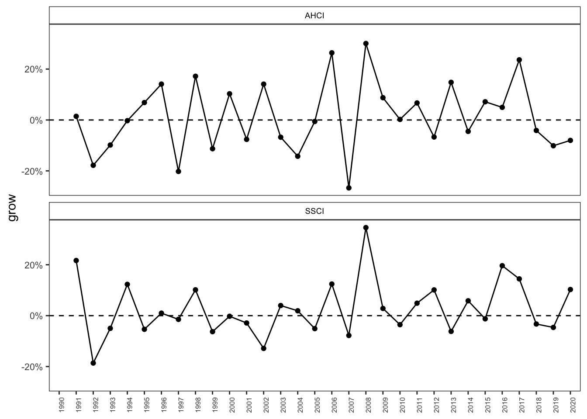
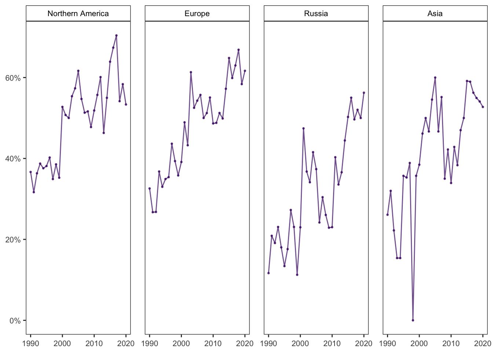
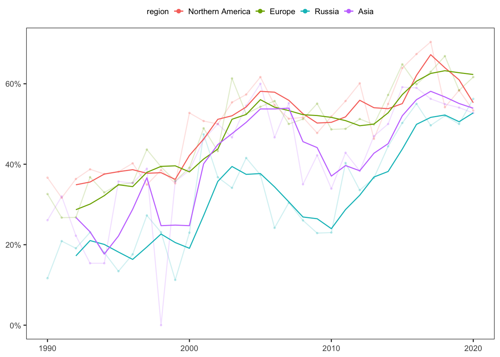

IV. ADD STAFF
phd-ка Text
Это дополнительные расчеты, для заполнение пустот в Text for the site analytics.pdf Прям по порядку по тексту.
Общее число уникальных статей 1990-2020: 25866. Общее число строк 1990-2020: 33919
Total Russian studies output has increased N%, for the 30-year period covering 1990-2020: рост AHCI за 30 лет = 37.8541688%, рост SSCI за 30 лет = 81.6097766%. Без разбиения на fields, общий рост 54.9020148%. Что НЕ равно (%SSCI + %AHCI) / 2, тут нет ошибки.
КОММЕНТАРИЙ, О КАКОМ ПРИРОСТЕ ИДЕТ РЕЧЬ:
В 1990 году было 100 статей, в 1991 уже 110. У нас произошел рост на 10%.
В 1992 году у нас было 110 статей. Значит роста не было, так как мы сравниваем уже не с 1990, а 1991. Значит 10% + 0%.
В 1993 было 105 статей, значит по сравнению с 110 в 1992 (которые для нас теперь 100%) это \(100 * 105 / 110 = 95.45455.\) Меньше на 4.545%. Итого за три года рост был \(10% + 0% - 4.545%\)
ВАЖНО! Синяя линия на графике не про эти проценты, такая линия у нас была на первой версии гит странички, мы решили ее не показывать, она супер хаотично выглядит. Если что цифра, которую требуется вставить в текст это сумма по годам этих скачущих процентов:

- for the 30-year period covering 1990–2020 the value of MNCS for Northern America publications is N (we can also observe that the recent papers tend to be cited less often – in 1990-2010 the MNCS was N while in 2011-2020 - N), the MNCS score for the European papers is N.
в среднем MNCS в сша 1990-2020:
по периодам США и Европа:
| year_3 | region | mean_mncs |
|---|---|---|
| 1990-2010 | Europe | 1.12 |
| 2011-2020 | Europe | 1.12 |
| 1990-2010 | Northern America | 1.38 |
| 2011-2020 | Northern America | 1.07 |
- For instance, in the period 1990-2000, the proportion of Northern America’s papers which were not cited was N, in 2000-2010 – N and in 2011-2020 – N. It seems that former articles are not cited because they are considered as obsolete while recent papers have not yet gained attention but they have chances to be cited in the forthcoming years. Although, in general, Russian papers demonstrate the same pattern, proportion of non-cited papers tend to be higher, especially in the first and second periods: in 1990- 2000, 2001-2010 – N and in 2011-2020 – N. In the last five years, Russia has showed the steady decrease in the proportion of non-cited articles.
# A tibble: 6 × 3
year_group region sh_zero_cit
<chr> <chr> <dbl>
1 1990-2000 Northern America 25.9
2 2001-2010 Northern America 15.2
3 2011-2020 Northern America 30.8
4 1990-2000 Russia 51.0
5 2001-2010 Russia 31.0
6 2011-2020 Russia 32.5- Нужен график как выше – доля статей в Q1 для региона для 2000-2020 годов. Fig.9


- Data from citations provide a window into the impact of a region’s scientific production to the most cited output (Fig.10). In 1990-s the Northern America was the major contributor to the world’s pool of 10% top cited articles – almost all articles were published by authors from this region. With the growth of papers written by European researchers the share has started to decrease: the Northern America was 46.4646465 for 2008 and 25.3588517 for 2020.
2015, Europe region overtaken the Northern America in the relative participation in the Top 10% – the region accounts for the 40% 43.3333333 of all top articles while Northern America – 28% 30.8333333 The proportion of Russian articles also increased from 1990 to 2020 from 1.1235955 to 22.9665072. The next Fig. 11 shows that publication of top cited articles is related to the publishing in high quality journals – the same pattern can be seen regarding the region’s share of papers published in Q1 journals.
- While Russia is one of key players on the global research scene, as the country produced in 2020 about N percent of the Russian studies articles included in the WoS, the impact of articles is below world average.
# A tibble: 5 × 3
region n sh
<chr> <int> <dbl>
1 Asia 110 8.46
2 Europe 480 36.9
3 Northern America 360 27.7
4 Other 46 3.54
5 Russia 304 23.4 # A tibble: 1 × 1
n
<int>
1 1156До этого момента все расчеты приводились на основе full_data_precise_original. То есть это раличные дополнения по материалам I и II раздела сайта. Следующий пункт (8) посчитан на data_website_original.xlsx, а точнее на фрaкционализованном датасете на основе data_website_original.xlsx. То есть теперь у нас поудет допонение к III разделу сайта.
Файл с таблицами Tables for site
katerina guba, [15 февр. 2023г., 20:06:35]: Тут только не забыть, что сейчас на сайте все, что странами ( до таблицы 3) сделано на полном датасете с необрезанными организациями, а с таблицы 3 на датасете, где только организации для сайта 428.
То есть табличка 3 такая пограничная, она про страны но с инфо по организациям поэтому ее на обрезанном датасете.
Все таблички с организациями на обрезанном
1
Важно: если у статьи два автора из россии и один с германии. Мы прибавляем +1 статью для россии (НЕ +2) и +1 германии.
полный датасет
country 1990-2020 N
1990-2020 total (%) 1990-2020 cumulative total (%)
1990 N 1990 total (%)
2020 N 2020 total (%)
2
country
1990-2020N
Total Citations
mncs_I mncs_II mncs_III
t1% (share) t10% (share) t25% (share) - у страны 100 статей и t1% = 10, значит из 100 10 статей в топ1 % of non-cited articles
3
обрезанный датасет
country
1990-2020 N publications
1990-2020 % publications of total
1990-2020 N organizations
1990-2020 % organizations of total Average N papers per organization N orgs in 1990
N orgs in 2020
4
обрезанный датасет
Organizations
Country
total_pub
mncs_frac_mean top_10_fr_sh
Top1 Top2
- В списке должно быть 79 органищаций, у которых больше 50 публ
- top1 - это входит ли в список 49 у которых больше по двум средним показателям и top2 - это входит в верхний квартиль по 2 показателям (то есть берутся не выше среднего а выше показателя 75% организаций), у меня получалось 25 организаций
5
только 49 организаций топа, count и period - это из последней таблицы на сайте-гитхаба
organisation_full
total_pub
country 1990-2000 I_sh_tot
2001-2010 II_sh_tot
2011-2020 III_sh_tot
count periods
ЛЕЖИТ в add_tab_fig.qmd
6
только 49 организаций топа organisation_full
country total_pub
[‘SSCI’] SSCI_%
[‘AHCI’] AHCI_%
area_1
N_1 sh_1
ЛЕЖИТ в add_tab_fig.qmd